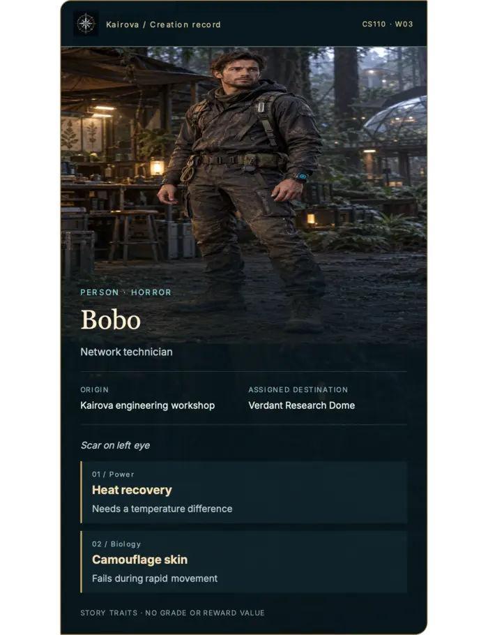
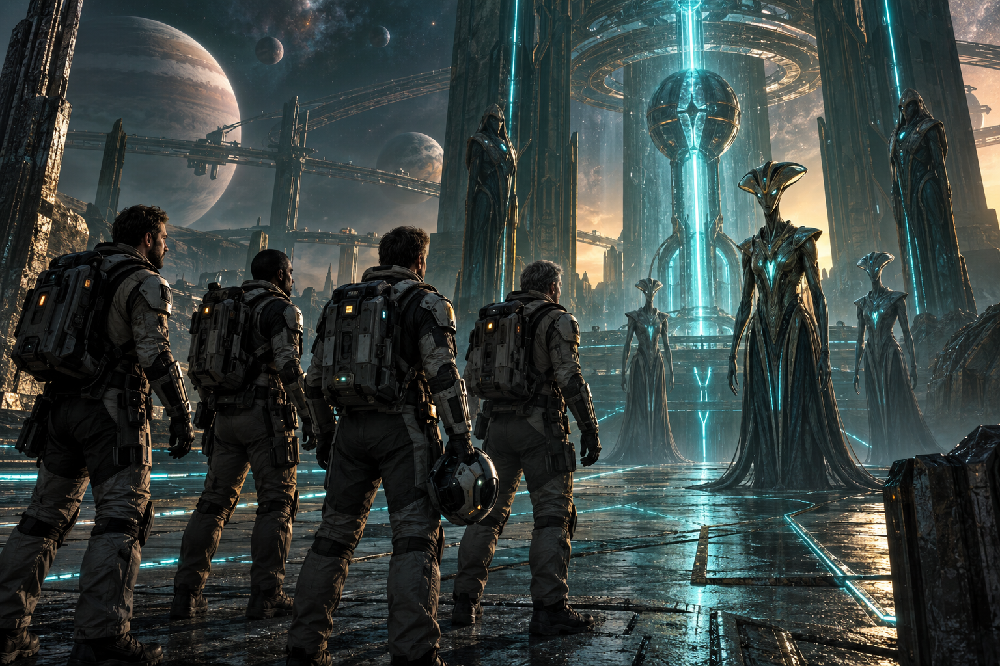
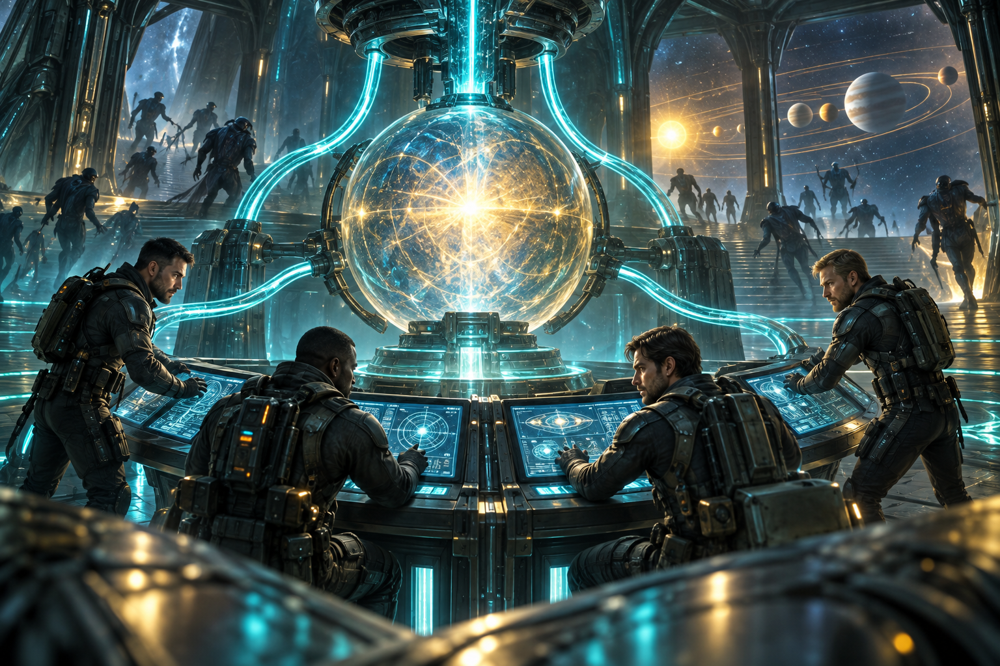
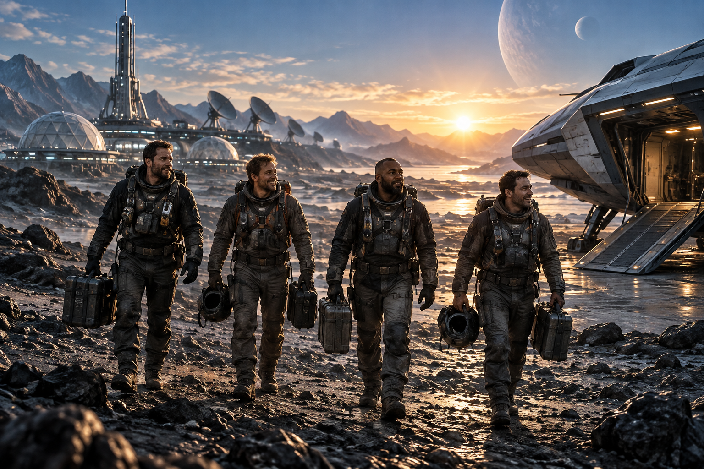

Recovered Evidence 01
The First Discovery

Our team discovered a hidden network that controls the entire Solar System. We began investigating it to understand how it worked and why it was created.
Expedition Report for Stalwart Inc.
Recovered Evidence 01

Our team discovered a hidden network that controls the entire Solar System. We began investigating it to understand how it worked and why it was created.
Recovered Evidence 02

While exploring the network, our team of four encountered unknown extraterrestrials guarding the facility. They saw us as a threat and attempted to stop our mission.
Recovered Evidence 03

The situation became dangerous, but we worked together and handled the threat. After securing the network, we collected the information needed for Stalwart Inc.
Recovered Evidence 04

All four members survived the expedition and returned safely to the ship. The mission made us stronger and showed us the importance of working together.